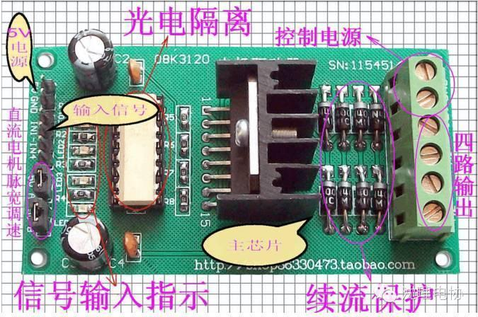
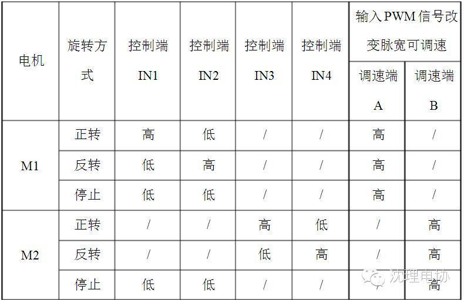
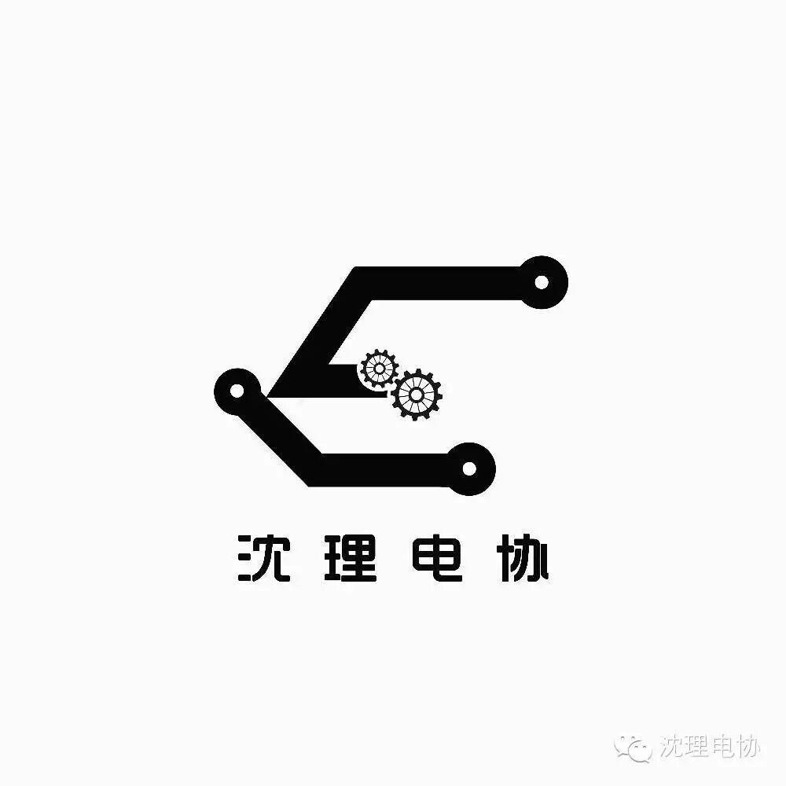

使用小程序

L298N是ST公司生产的一种高电压、大电流电机驱动芯片。该芯片采用15脚封装。主要特点是：工作电压高，最高工作电压可达46V；输出电流大，瞬间峰值电流可达3A，持续工作电流为2A；额定功率25W。内含两个H桥的高电压大电流全桥式驱动器，可以用来驱动直流电动机和步进电动机、继电器线圈等感性负载；采用标准逻辑电平信号控制；具有两个使能控制端，在不受输入信号影响的情况下允许或禁止器件工作有一个逻辑电源输入端，使内部逻辑电路部分在低电压下工作；可以外接检测电阻，将变化量反馈给控制电路。使用L298N芯片驱动电机，该芯片可以驱动一台两相步进电机或四相步进电机，也可以驱动两台直流电机。
简要说明：
一、尺寸：80mmX45mm
二、主要芯片：L298N、光电耦合器
三、工作电压：控制信号直流5V；电机电压直流3V~46V（建议使用36伏以下）
四、最大工作电流：2.5A
五、额定功率：25W
特点： 1、具有信号指示。
2、转速可调
3、抗干扰能力强
4、具有过电压和过电流保护
5、可单独控制两台直流电机
6、可单独控制一台步进电机
7、PWM脉宽平滑调速
8、可实现正反转
实例：直流电机的控制实例
使用直流/步进两用驱动器可以驱动两台直流电机。分别为M1和M2。引脚A，B可用于输入PWM脉宽调制信号对电机进行调速控制。（如果无须调速可将两引脚接5V，使电机工作在最高速状态，既将短接帽短接）实现电机正反转就更容易了，输入信号端IN1接高电平输入端IN2接低电平，电机M1正转。（如果信号端IN1接低电平， IN2接高电平，电机M1反转。）控制另一台电机是同样的方式，输入信号端IN3接高电平，输入端IN4接低电平，电机M2正转。（反之则反转），PWM信号端A控制M1调速，PWM信号端B控制M2调速。
可参考下图表：

